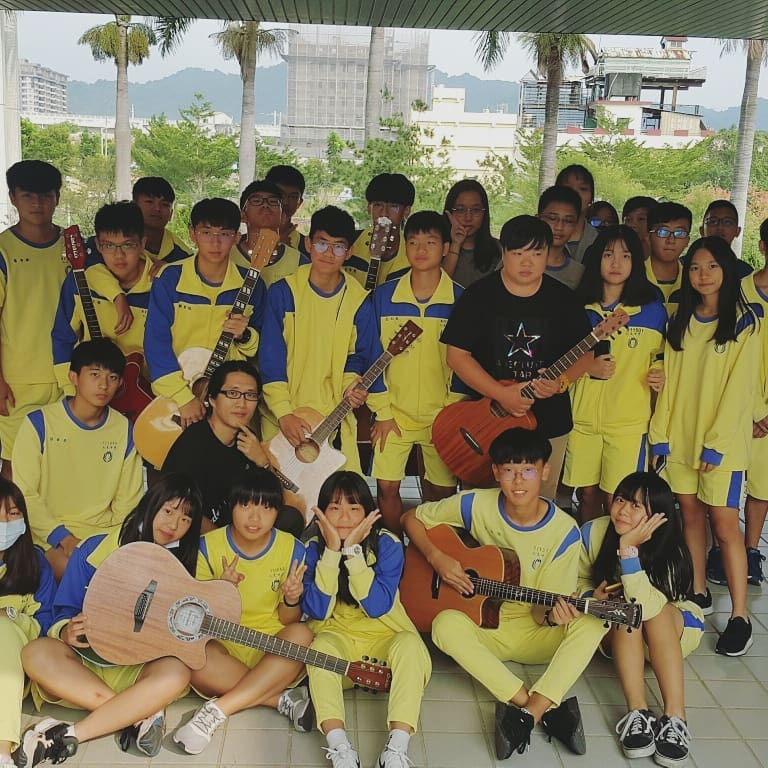

范志強
個人網站
HI 范志強
攝影 程式 運動
自我介紹：
我是一個愛運動的人
有時候優柔寡斷
但我我盡全力改進自己
我的興趣
-
吉他一直是我的興趣，從我國小就開始學了
-
在小學六年級我開始練習吉他，在聖誕節前夕我利用老師的給我的機會，找了幾位同學一同表演，我負責彈吉他，其他同學負責唱個跟搖沙鈴，我的表演歌曲是無樂不作
-
因著我的興趣所以參加了吉他社精進自己的技能
 - 大豐建築企業股份有限公司
- 好星晴手鍊(小型電商網站)
- 饗玩俱樂部(形象網站)
分析期貨資料
資料範圍是2007~2012，每天交易日中的每筆交易
6年，71個月，1474個交易日，期貨成交紀錄檔：2億8千萬筆的資料(287259643)+期貨交易人部位資料57000509
總共要處理的資料量為344260152(三億多筆的相關資料)
每筆資料紀載著投資人身份碼、成交價格、口數、商品代號、商品分類等
要利用這些資料找出為什麼這個人會離開期貨市場
分析做了哪些動作導致的離開市場。
先將大數據做基本的特徵工程，把資料歸一化、標準化、離散化
整理後做特徵選擇，將資料做為迴歸回歸的參考值
建立線性迴歸模型之後，藉此來預測每個交易人
並且找出哪個特徵對交易人關聯性最大
後來發現迴歸回歸正確性並不好
進而選擇利用隨機森林做更好的分析。
也是因為這個案子，讓我更認識Python 利用Python做大數據真的又快又準確 能使用到的工具真的是多到不行 讓我欣賞了這程式工具的魅力

利用android studio 寫android 6.0
方便中醫師紀錄及收集病人的基本資料、異常症狀、針數
自我練習
學習利用Google Cloud Platform架設網站
在Linux環境安裝Apache、Mysql、PHP
就是所謂的LAMP
並且研究Apache Virtual Hosts
讓同一台主機設定不同DNS指向
光是這些動作，就讓我更認識主機設定的重要性了
以前的我，就只是寫寫程式
在將程式上傳至已經建立好PHP環境的虛擬主機裡
非常的單純簡單
嘗試用ReactNative做一個跨平台專案
可以讓開發者利用JS就可以寫出原生的APP
輕鬆簡易的程式邏輯，開發當下一直有種莫名的爽感
開發時還是要注意(網站、android、ios)撰寫程式時的各平台差異
上架ios時，需要正統的上架流程
這部分讓我這個沒有mac及apple ID的開發者完全無法招架
利用python做一個爬蟲
並且利用google search console
檢查網站的成效，進而不斷改變搜尋條件
建立網站跟關鍵字的關聯
利用Pythony做股票分析
先安裝相關套件(Stocker & Yahoo Finance & Prophet)
1.找出個股的歷史股價
2.Prophet 模型找出短期的個股走向
3.產生圖表
4.再配上胖胖的一些公式算出個股合理價
5.比對後，觀察後
6.買買買買買買買，買爆!!!!!
7.賺錢還是賠錢，只有胖胖自己知道
設計相關作品
-01.jpg)